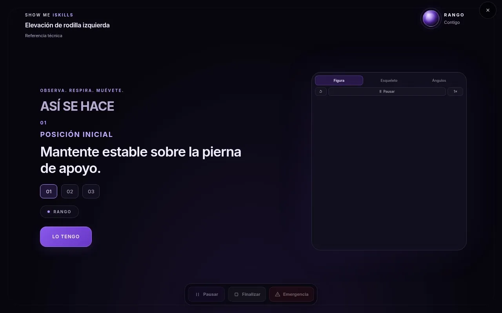
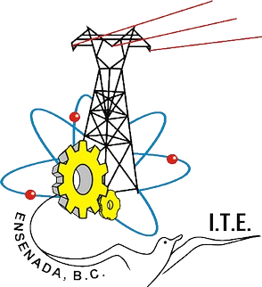

Instituto Tecnológico de Ensenada
Instituto Tecnológico de Ensenada
Tecnología para la Salud Humana
Tu movimiento. Analizado. Comprendido. Mejorado.
Visión por computadora e inteligencia artificial para acompañar actividades físicas, deportivas, de movilidad y rehabilitación. Solo con una cámara.
Problemática
Entrenar solo deja demasiadas preguntas sin responder.
Sin acompañamiento constante
La mayor parte del entrenamiento y la rehabilitación ocurre sin un profesional presente.
Movimientos mal ejecutados
Sin referencia, una técnica incorrecta se repite sin que nadie la note.
Retroalimentación tardía
La corrección llega en la siguiente cita, no en la repetición que la necesitaba.
Progreso difícil de registrar
Lo que se hizo y cómo se hizo rara vez queda documentado.
Herramientas poco accesibles
Los sistemas de seguimiento suelen requerir sensores, equipo especializado o costos altos.
Producto
Una sesión guiada que observa, corrige y registra.
Con una cámara, Show Me iSkills estima la pose corporal, compara el movimiento con las reglas de cada Skill y deja que Rango te acompañe con indicaciones claras. No requiere sensores ni accesorios.

Cómo funciona
Siete pasos, de la Skill al registro.
Cada sesión sigue la misma secuencia para que el usuario sepa siempre qué sigue.
Seleccionar una Skill
Elige la actividad en el catálogo: deporte, fuerza, movilidad o rehabilitación.
Prepararse frente a la cámara
Rango indica la distancia y el encuadre para que el cuerpo sea visible.
Observar la demostración
Una referencia visual muestra posición inicial, movimiento y regreso.
Realizar el movimiento
Ejecutas el ejercicio a tu ritmo, frente a la cámara.
El sistema analiza la información visual
Se estima la pose corporal y se evalúan las condiciones observables que define la Skill.
Rango proporciona retroalimentación
Indicaciones breves por voz, en texto y en subtítulos, en el momento oportuno.
Se registran resultados y progreso
La sesión queda en el historial del perfil para consultarla después.
Soluciones
Un mismo motor para distintos contextos.
Deporte
Práctica técnica guiada, como el tiro libre en básquetbol, con referencia visual y progresión.
Entrenamiento y fuerza
Corrección de forma en tiempo real y pausa segura ante riesgo o dolor.
Movilidad
Sesiones de hombro y rodilla con seguimiento de repeticiones por cámara.
Rehabilitación
Acompañamiento de un plan aprobado por un profesional verificado.

Conoce a Rango
El asistente que guía cada sesión.
Rango presenta instrucciones, muestra demostraciones, da retroalimentación y conversa por voz y texto. Detrás coordina tres agentes especializados: Coach, Fisioterapeuta y Psicólogo.
Tecnología
Visión por computadora que se ejecuta en tu equipo.
Estimación de pose, análisis de movimiento y un motor de Skills modular. El procesamiento principal es local; los servicios externos solo se usan para funciones que lo requieren.
- Estimación de pose corporal con modelos de visión por computadora.
- Reglas observables por Skill: solo se evalúa lo que la cámara puede ver.
- Rango coordina la retroalimentación de tres agentes especializados.
- Registro de sesiones y progreso por perfil.
Show Me iSkills es una herramienta de acompañamiento y seguimiento. No sustituye la valoración de profesionales de la salud ni constituye por sí misma un sistema de diagnóstico médico.
Origen
Desarrollado en el Instituto Tecnológico de Ensenada.
Show Me iSkills nace en el Tecnológico Nacional de México y participa en InnovaTecNM 2026.


Empieza por el manual o por la documentación.
Todo lo necesario para usar, evaluar y entender Show Me iSkills.